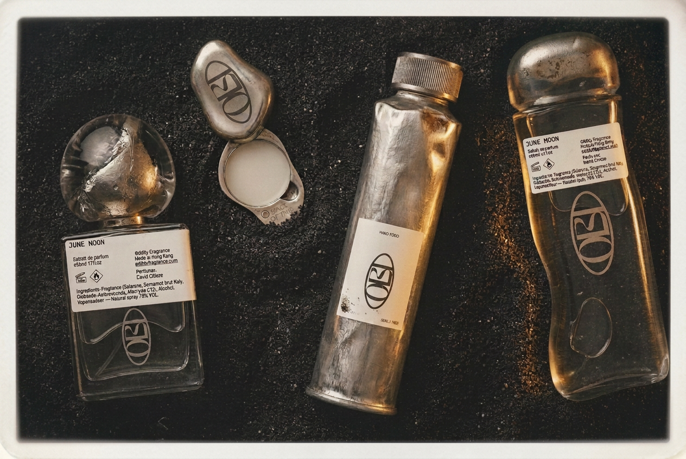
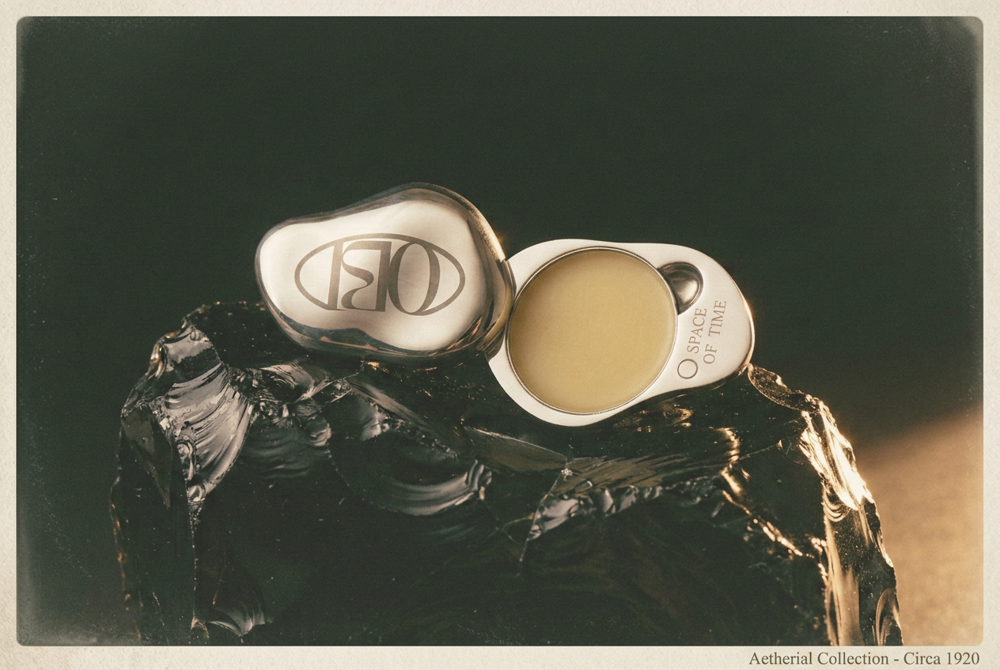
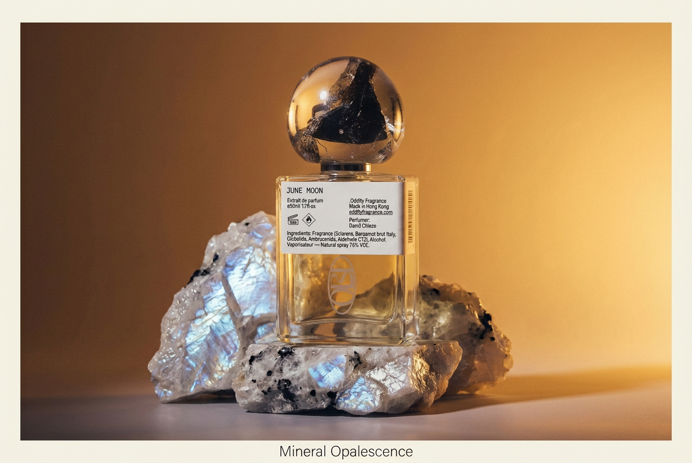
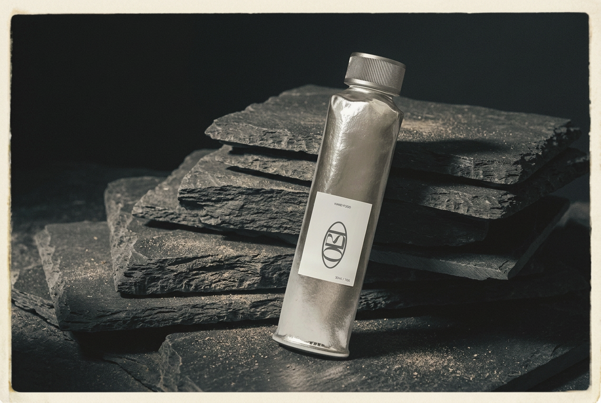
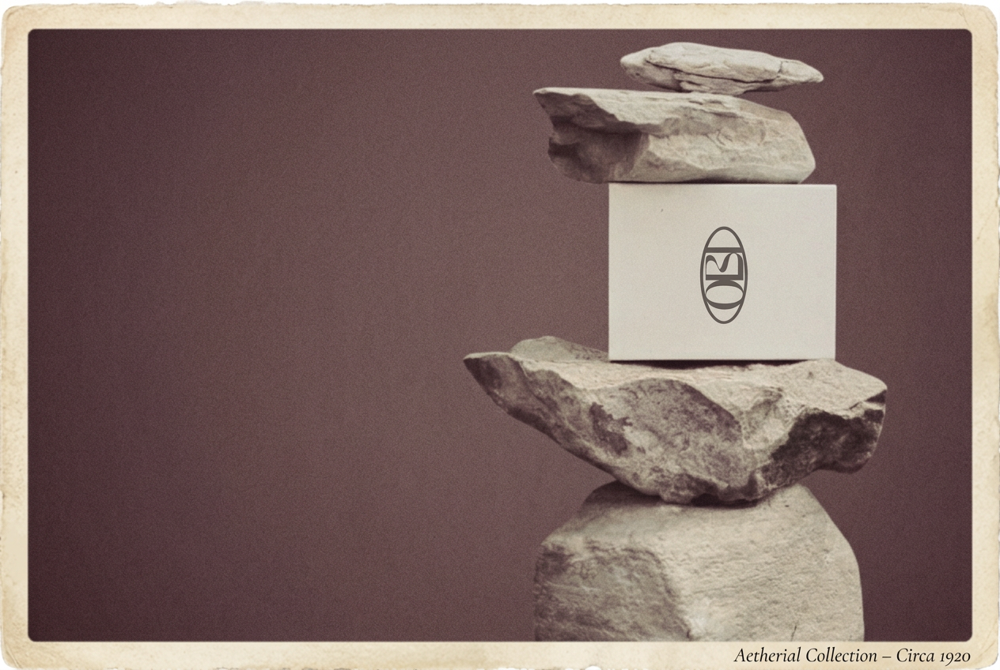

Ancient Materials, Made New.

OBI is a fine fragrance house composed exclusively from minerals, plants, and resins — sourced and produced using cutting-edge extraction technology that preserves molecular integrity from harvest to bottle. The formulations were exacting; the brand around them wasn't yet.
Build a brand world that felt as elemental as the ingredients themselves — grounding and ethereal at once, ancient materials made new, with packaging and photography that could hold up against the most restrained luxury fragrance houses. Nothing about the identity could compete with the material; it had to defer to it.
The identity centers on a double-oval mark — two interlocking forms, dense and quiet, engraved into every compact, cap, and tube rather than printed onto it. It reads less like a logo and more like a hallmark, the kind stamped into metal to certify what's inside.
A dark, mineral visual language built around the mark, a black/ash/stone/silver/platinum palette, and product photography that treats each object as a specimen — precise, tactile, and quietly dramatic.

Each formulation is staged like something excavated rather than manufactured — June Moon extrait resting on labradorite, Hand Food standing against split slate. The mineral world isn't a backdrop; it's where the ingredients came from.


The outer packaging borrows the same restraint as the bottles — a plain stone-colored box, mark debossed at center, photographed the way a jeweler would shoot a stone: balanced, lit from one side, and left alone.

Identity, packaging, photography, and e-commerce built as a single material language. OBI now reads as a fine fragrance house with an identity as considered as its formulations — dark, mineral, and unmistakably its own.
This project was shaped by a shared belief that restraint is its own kind of luxury. Thank you for trusting that belief through every material decision.
Continue to the Next Project →